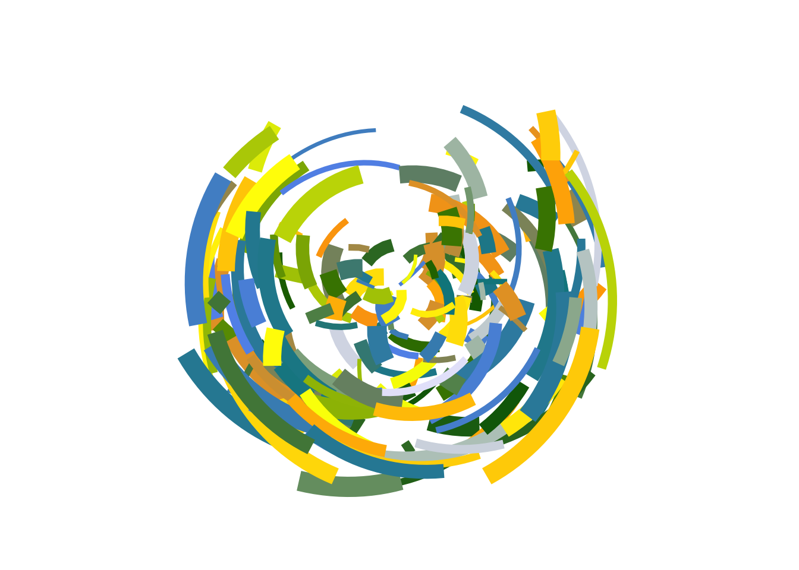
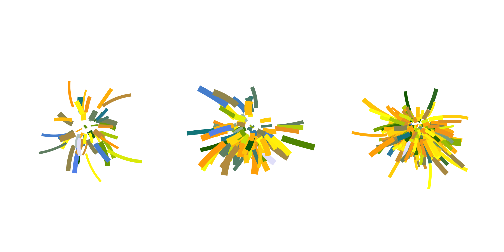
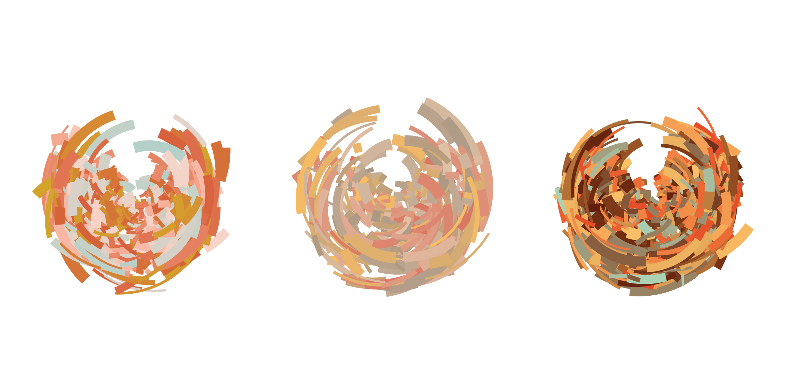
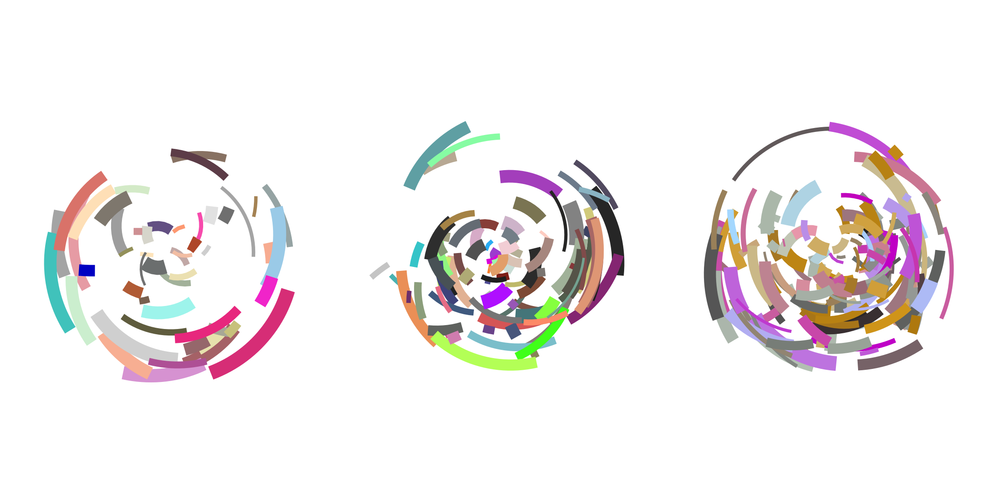
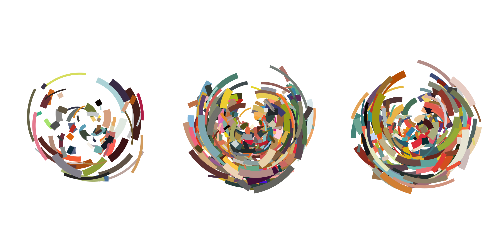
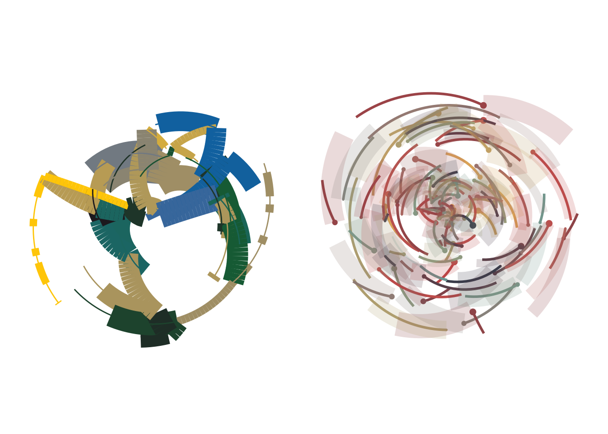
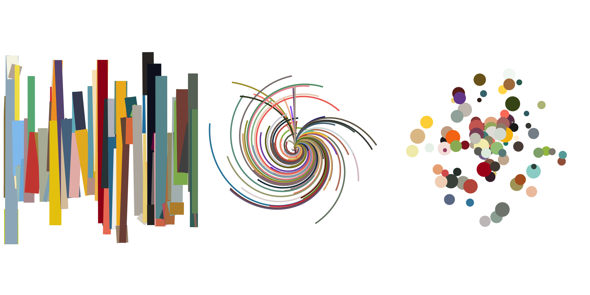

Code
library(tidyverse)
library(NatParksPalettes)
library(patchwork)
library(scales)
library(ggthemes)library(tidyverse)
library(NatParksPalettes)
library(patchwork)
library(scales)
library(ggthemes)ggplot(data = mpg, aes(x = cty, y = hwy, color = year, fill = manufacturer)) +
geom_point(size = 6, shape = 22) +
scale_fill_manual(values = natparks.pals("Volcanoes", n = 15, type = "continuous")) +
theme_void() +
theme(legend.position = "none")
polar_art()Function:
polar_art <- function(seed, n, palette) {
# set the state of the random number generator
set.seed(seed)
# data frame containing random values for
# aesthetics we might want to use in the art
dat <- tibble(
x0 = runif(n),
y0 = runif(n),
x1 = x0 + runif(n, min = -.2, max = .2),
y1 = y0 + runif(n, min = -.2, max = .2),
shade = runif(n),
size = runif(n)
)
# plot segments in various colours, using
# polar coordinates and a gradient palette
dat |>
ggplot(aes(
x = x0,
y = y0,
xend = x1,
yend = y1,
colour = shade,
linewidth = size
)) +
geom_segment(show.legend = FALSE) +
coord_polar() +
scale_y_continuous(expand = c(0, 0)) +
scale_x_continuous(expand = c(0, 0)) +
scale_colour_gradientn(colours = palette) +
scale_size(range = c(0, 10)) +
theme_void()
}Output:
polar_art(
# change seed
seed = 666,
# change numbers
n = 200,
# change palette
palette = c("cornflowerblue", "turquoise4", "orange",
"yellow", "darkgreen", "lavender")
)
polar_art_02()Function:
polar_art_02 <- function(seed, n, palette) {
# set the state of the random number generator
set.seed(seed)
# data frame containing random values for
# aesthetics we might want to use in the art
dat <- tibble(
# changing distributions
x0 = rnorm(n),
y0 = rnbinom(n, size = rpois(1, 10), prob = 0.5),
x1 = x0 + runif(n, min = -.2, max = .2),
y1 = y0*2 + rbeta(n, shape1 = 3, shape2 = 2),
shade = rnorm(n),
size = rpois(n, 20)
)
# plot segments in various colours, using
# polar coordinates and a gradient palette
dat |>
ggplot(aes(
x = x0,
y = y0,
xend = x1,
yend = y1,
colour = shade,
linewidth = size
)) +
geom_segment(show.legend = FALSE) +
coord_polar() +
scale_y_continuous(expand = c(0, 0)) +
scale_x_continuous(expand = c(0, 0)) +
scale_colour_gradientn(colours = palette) +
scale_size(range = c(0, 10)) +
theme_void()
}Output:
polarpalette <- c("cornflowerblue", "turquoise4", "orange",
"yellow", "darkgreen", "lavender")
polar50 <- polar_art_02(seed = 666, n = 50, palette = polarpalette)
polar100 <- polar_art_02(seed = 666, n = 100, palette = polarpalette)
polar300 <- polar_art_02(seed = 666, n = 300, palette = polarpalette)
polar50 + polar100 + polar300
It’s a “random” process - different output every time!
sample_canva()Function:
# the original function from the first session
sample_canva <- function(seed = NULL) {
if(!is.null(seed)) set.seed(seed)
sample(ggthemes::canva_palettes, 1)[[1]]
}
# the extended function used in later sessions
sample_canva2 <- function(seed = NULL, n = 4) {
if(!is.null(seed)) set.seed(seed)
sample(ggthemes::canva_palettes, 1)[[1]] |>
(\(x) colorRampPalette(x)(n))()
}Output:
canva50 <- polar_art(seed = 666, n = 452, palette = sample_canva(seed = 50))
canva1000 <- polar_art(seed = 1, n = 323, palette = sample_canva(seed = 1000))
canva50000 <- polar_art(seed = 234987, n = 797, palette = sample_canva(seed = 50000))
canva50 + canva1000 + canva50000
sample_named_colors()Function:
sample_named_colors <- function(n) {
# sample from list of named colors in R
sample(x = colours(distinct = TRUE),
size = n,
replace = FALSE)
}Output:
sample1 <- polar_art(seed = 666, n = 50, palette = sample_named_colors(n = 50))
sample2 <- polar_art(seed = 111, n = 90, palette = sample_named_colors(n = 100))
sample3 <- polar_art(seed = 444, n = 150, palette = sample_named_colors(n = 10))
sample1 + sample2 + sample3
sample_canva_random()Function:
sample_canva_random <- function(seed = NULL) {
# select a number of colors from a uniform distribution (and round)
n <- round(runif(n = 1, min = 1, max = 600), digits = 0)
# sample from list of all Canva colors
sample(unlist(ggthemes::canva_palettes),
size = n,
replace = FALSE)
}Output:
randomcanva1 <- polar_art(seed = 4245, n = 85, palette = sample_canva_random(seed = 1))
randomcanva2 <- polar_art(seed = 7832574, n = 425, palette = sample_canva_random(seed = 2))
randomcanva3 <- polar_art(seed = 453452, n = 254, palette = sample_canva_random(seed = 3))
randomcanva1 + randomcanva2 + randomcanva3
Functions:
sample_canva <- function(seed = NULL) {
if(!is.null(seed)) set.seed(seed)
sample(ggthemes::canva_palettes, 1)[[1]]
}
sample_data <- function(seed = NULL, n = 100){
if(!is.null(seed)) set.seed(seed)
dat <- tibble(
x0 = runif(n),
y0 = runif(n),
x1 = x0 + runif(n, min = -.2, max = .2),
y1 = y0 + runif(n, min = -.2, max = .2),
shade = runif(n),
size = runif(n),
shape = factor(sample(0:22, size = n, replace = TRUE))
)
}
polar_styled_plot <- function(data = NULL, palette) {
ggplot(
data = data,
mapping = aes(
x = x0,
y = y0,
xend = x1,
yend = y1,
colour = shade,
size = size
)) +
coord_polar(clip = "off") +
scale_y_continuous(
expand = c(0, 0),
limits = c(0, 1),
oob = scales::oob_keep
) +
scale_x_continuous(
expand = c(0, 0),
limits = c(0, 1),
oob = scales::oob_keep
) +
scale_colour_gradientn(colours = palette) +
scale_size(range = c(0, 10)) +
theme_void() +
guides(
colour = guide_none(),
size = guide_none(),
fill = guide_none(),
shape = guide_none()
)
}Output with modifications to sample data, using polar_styled_plot(), and using geoms:
# changing seed
sampledat1 <- sample_data(n = 25, seed = 666)
sampledat1plot <- polar_styled_plot(palette = sample_canva(seed = 100)) +
# using segment
geom_segment(data = sampledat1, linetype = "331311") +
# adding line
geom_line(data = sampledat1) +
# adding segment
geom_segment(data = sampledat1, aes(x = x0, xend = x1), linewidth = 0.5)
# changing n
sampledat2 <- sample_data(n = 100, seed = 666)
sampledat2plot <- polar_styled_plot(palette = sample_canva(seed = 44)) +
geom_point(data = sampledat2, aes(size = (y0 - y1)^2)) +
# adding segment
geom_segment(data = sampledat2, aes(y = y0, yend = y1), linewidth = 1) +
geom_segment(data = sampledat2, aes(x = x0, xend = x0 + 0.11), alpha = 0.2)
sampledat1plot + sampledat2plot
my_styled_plot()Function:
my_styled_plot <- function(data = NULL, palette) {
ggplot(
data = data,
mapping = aes(
x = x0,
y = y0,
xend = x1,
yend = y1,
colour = shade,
size = size
)) +
# coord_cartesian() +
scale_y_continuous(
expand = c(0, 0),
limits = c(0, 1),
oob = scales::oob_keep
) +
scale_x_continuous(
expand = c(0, 0),
limits = c(0, 1),
oob = scales::oob_keep
) +
scale_colour_gradientn(colours = palette) +
scale_size(range = c(0, 10)) +
theme_void() +
guides(
colour = guide_none(),
size = guide_none(),
fill = guide_none(),
shape = guide_none()
)
}Output:
sampledat3 <- sample_data(n = 100, seed = 666)
msp1 <- my_styled_plot(data = sampledat3, palette = sample_canva_random(seed = 40)) +
geom_line()
msp2 <- my_styled_plot(data = sampledat3, palette = sample_canva_random(seed = 40)) +
geom_segment(aes(x = 0, xend = x1, y = 0, yend = y1), linewidth = 1) +
coord_polar()
msp3 <- my_styled_plot(data = sampledat3, palette = sample_canva_random(seed = 40)) +
geom_point() +
coord_polar()
msp1 + msp2 + msp3